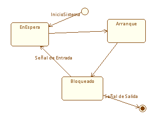
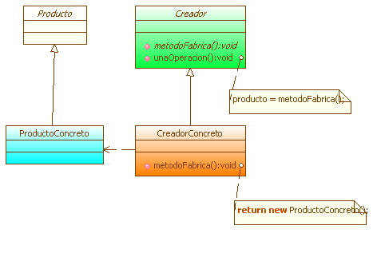

|
Framework FG |
|
El Framework Grafico (FG) es un framework diseñado para dar soporte al desarrollo de diagramas bajo teoría de grafos. Este framework tiene abstracciones básicas que permiten crear modelos gráficos sobre los conceptos de nodo y arco, lo que posibilita su posterior aplicación a soluciones como es el caso de los plugins del sistema UML.+.
 Figura 1. Framework FG utilizado en Diagrama de Estados
 Figura 2. Personalización de Diagrama de Clases La Figura 2 muestra un diagrama de clases donde se aprecian diferentes tipos
de conectores y la posibilidad de personizalar los nodos.
|